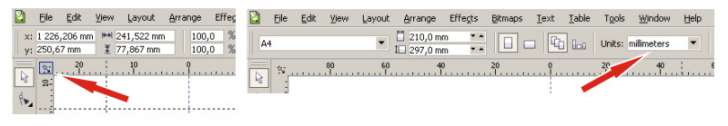
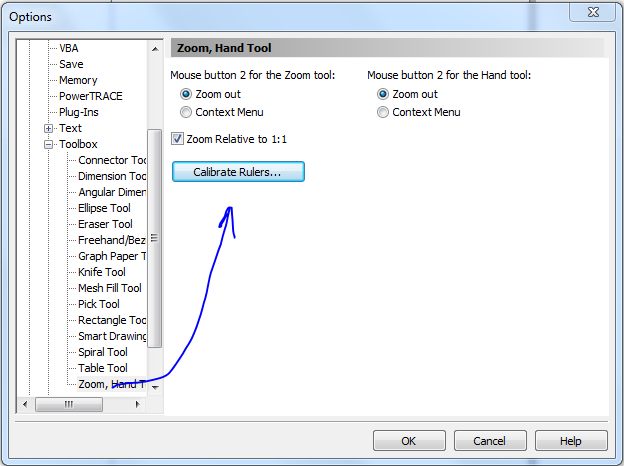

Как настроить линейки
skich / 17.04.2010, 02:16/00:41
Форум:
люди, подскажите пожалуйста как настроить линейки в corel что бы размеры соответсвовали реальным.. как на настоящей ленейке..
люди, подскажите пожалуйста как настроить линейки в corel что бы размеры соответсвовали реальным.. как на настоящей ленейке..
прости, не совсем ясен вопрос. вообще-то линейка и соответствует реальной.
если ты о том, что нулевая отметка находится неизвестно где, то точку отсчёта легко установить самому: в левом верхнем углу (на пересечении горизонтальной и вертикальной линеек) находится кнопка. Её нужно нажать и, не отпуская, перетащить точку отсчёта туда, куда хочется (например, на верхний угол "страницы").
если же речь о единицах отсчёта (дюймы, миллиметры...), то они выставляются на панели свойств страницы.

точку отсчета знаю как, я имел ввиду 10 мм не соответствуют 10 мм на настоящей линейке, т.е. в corel эти 10 мм больше чем на линейке которую к примеру я купил в магазине..
Options - Workspace - Toolbox - Zoom, Hand Tool - Calibrate Rulers...

или почитай здесь http://cdrpro.ru/forum/5-284-3
О спасибо большое, разобрался
5 лет страдал, не мог понять как на экране макет нормально показать в реальном размере.
Спасибо большое! :)